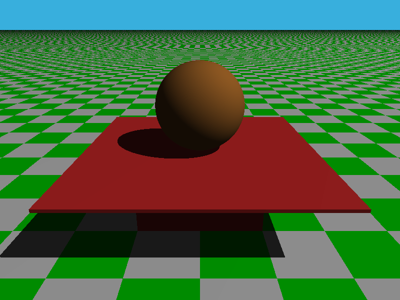

Les matériaux avec POVRay
Définition
Dans POVRay une
texture est une structure permettant de regrouper les
propriétés qui caractérisent un matériau :
On retiendra la forme classique d'une texture
texture {
pigment {...}
normal {...}
finish {...}
}
La couleur
Le champ
pigment
d'une texture permet de définir la couleur d'un objet.
Pour définir une couleur unie on pourra écrire :
pigment {color rgb <r,v,b >}
où r, v et b sont des décimaux compris entre 0 et 1 qui représentent
respectivement des niveaux de rouge, de vert et de bleu.
On pourra aussi utiliser une couleur prédéfinie dans le fichier
colors.inc.
Par exemple : pigment {color White},
pigment {color Black}, pigment {color Red}, ...
On peut aussi utiliser une notation simplifiée :
pigment {rgb <0, 1, 0 >} ou pigment {Green}.
La surface
Le champ
normal
d'une texture permet de caractériser la surface d'un objet.
Le modèle d'illumination
Le champ finish permet de définir les qualités de réflexion
ambiante, diffuse
et
spéculaire
d'un matériau.
Usuellement on utilisera la structure finish suivante
finish {
ambient refAmbiant // vecteur
diffuse refDiffuse // décimal
specular intensiteEclat // décimal
roughness tailleEclat // décimal
reflection {
min //couleur
max //couleur
}
}
- le vecteur refAmbiant sera utilisé pour l'éclairement
des parties cachées ;
- le décimal refDiffuse définit l'intensité de la réflection
diffuse du matériau ;
- les décimaux intensiteEclat et tailleEclat
définissent respectivement l'intensité et la taille de l'éclat lumineux
apparaissant sur le matériau ;
- les champs specular et roughness ne définissent pas
la réflexion spéculaire du matériau : c'est à dire sa capacité à réfléchir
la lumière à la manière d'un miroir ;
- c'est le bloc reflection qui la définit : les décimaux
min et max définissent respectivement les intensités
minimale et maximale de la réflexion.
Pour obtenir un miroir parfait on pourra utiliser la texture suivante
texture{
pigment{Black}
finish{
ambient 0
diffuse 0
reflection {1}
}
}
Il existe dans PoVRay d'autres méthodes permettant de réaliser l'illumination d'une scène. Elles ne seront
pas abordées dans le cadre de ces Tps d'initiation. Rien ne vous empêche de les tester en dehors de ces séances !
Travail à réaliser

L'image ci-contre repésente une boule placée sur une table rudimentaire composée d'un pied
cubique et d'un plateau parallélépipédique. La table est posée sur un sol horizontal.
Des primitives de base sont utilisées : box pour le pied et le plateau,
sphere pour la boule et plan pour le sol.
Un pigment avec motif a été utilisé pour le sol : pigment {checker Green, White}.
La couleur de fond a été fixée à l'aide de l'instruction background { color SummerSky }.
La scène est éclairée par une source de lumière blanche.
- Écrivez dans un fichier nommé deuxiemescene.pov le script permettant
de créer cette image.
- Il existe d'autres motifs à liste
que checker. Testez-en quelques-uns pour le sol.
- Utilisation des champs ambient et diffuse.
Le champ pigment d'une texture définit l'apparence qu'aurait l'objet s'il était totalement éclairé :
c'est à dire si tous les points de sa surface étaient face à la source de lumière.
Les champs ambient et diffuse permettent de gérer les quantités de lumière ambiante et diffuse
réfléchies par la surface de l'objet. Ces deux champs ont des valeurs par défaut : respectivement 0.1 et 0.6.
Ce sont ces valeurs par défaut qui ont été utilisées en l'absence du composant finish dans
les deux premières scènes que vous avez composées.
- Introduisez un composant finish dans la définition de la texture de la sphère et positionnez à 0
les champs ambient et diffuse. Observation ?
- Rétablissez les valeurs par défaut.
- Choisissez White comme couleur de la sphère et positionnez le champ ambient à 1 et le champ
diffuse à 0. Vous obtenez ainsi une boule étincellante sans partie ombragée.
-
Utilisation de specular.
- Utilisez le champ specular pour créer
un éclat lumineux sur la sphère.
- Testez l'action du champ metallic
- Utilisation de reflection
Le composant reflection sert à gérer
la réflectivité de la surface d'un objet. Il s'agit de l'effet miroir.
- Placez un bloc reflection dans le finish de la texture de votre boule. Testez différentes
utilisations possibles de ce bloc reflection :
- bloc à un paramètre : le matériau a la même réflectivité quelque soit l'angle de vue ;
- bloc à deux paramètres : une couleur min qui est la couleur de réflexion de la surface
vue perpendiculairement (réflectivité minimale) et une couleur max qui est la couleur de réflexion
de la surface vue de manière rasante (réflectivité maximale).
- Vous terminerez vos tests en donnant à la boule un aspect fortement métallique.
- Déclarez une texture qui servira à
décrire le matériau composant le pied et le plateau de la table. Ce matériau aura un aspect rougeâtre et
être fortement réfléchissant. Utilisez cette texture dans le composant texture des primitives
décrivant la table.